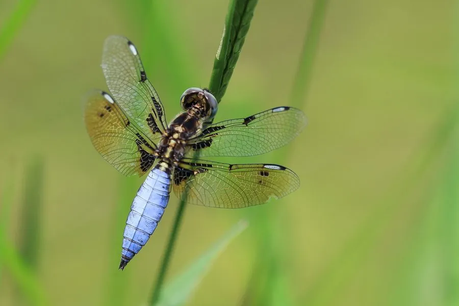

昆虫 · 动物界
六斑曲缘蜻 Palpopleura sexmaculata

翅面有六个黑斑、体形小巧的蜻蜓，栖于池塘与稻田边的草丛，雌雄翅斑差异明显，中国南方常见。
- 分类
- 门节肢动物门纲昆虫纲目蜻蜓目科蜻科属曲缘蜻属
- 栖息环境
- 池塘、稻田、沟渠边的草丛与灌丛
- 地理分布
- 中国长江以南各地及东南亚、南亚
- 保护级别
- 常见种，无保护级别；水质污染是潜在威胁
物种志
六斑曲缘蜻的成虫体长约二至三厘米，是中国体型较小的蜻蜓之一。体色黄褐至黑褐，胸部有淡色条纹，腹部细长。前后翅透明，每翅各有一个明显的黑色斑块，四翅合计形成六处深色斑纹，六斑之名由此而来；雌虫的翅斑更大更黑，翅尖还带琥珀色，与雄虫差别明显。
它分布于中国长江以南以及东南亚和南亚，栖息在池塘、稻田、沟渠边的草丛和灌丛。成虫常停在水边草叶的顶端，飞行距离短，受惊后也只飞几米就落下，很容易观察。它捕食蚊、蠓等小型飞虫，是湿地食物网中的小型捕食者。稚虫生活在静水底部，捕食水生小虫，羽化时爬到草茎上蜕壳。它对水质和农药敏感，可作为湿地环境质量的参考物种。
形态与习性
- 体长约二至三厘米，体型小巧
- 翅斑四翅共六处黑斑，雌虫斑更大
- 雌雄差异雌虫翅斑更黑，翅尖带琥珀色
- 食性捕食蚊、蠓等小型飞虫
- 稚虫生活于静水底部，捕食水生小虫
- 习性常停草叶顶端，飞行距离短
趣味知识
- 它四片翅膀上一共六块黑斑，数一数就能认出它。
- 它飞不高也飞不远，受了惊绕一圈又落回原来的草尖。
- 它的稚虫在水底吃小虫，羽化时爬上草茎，留下一个空壳。